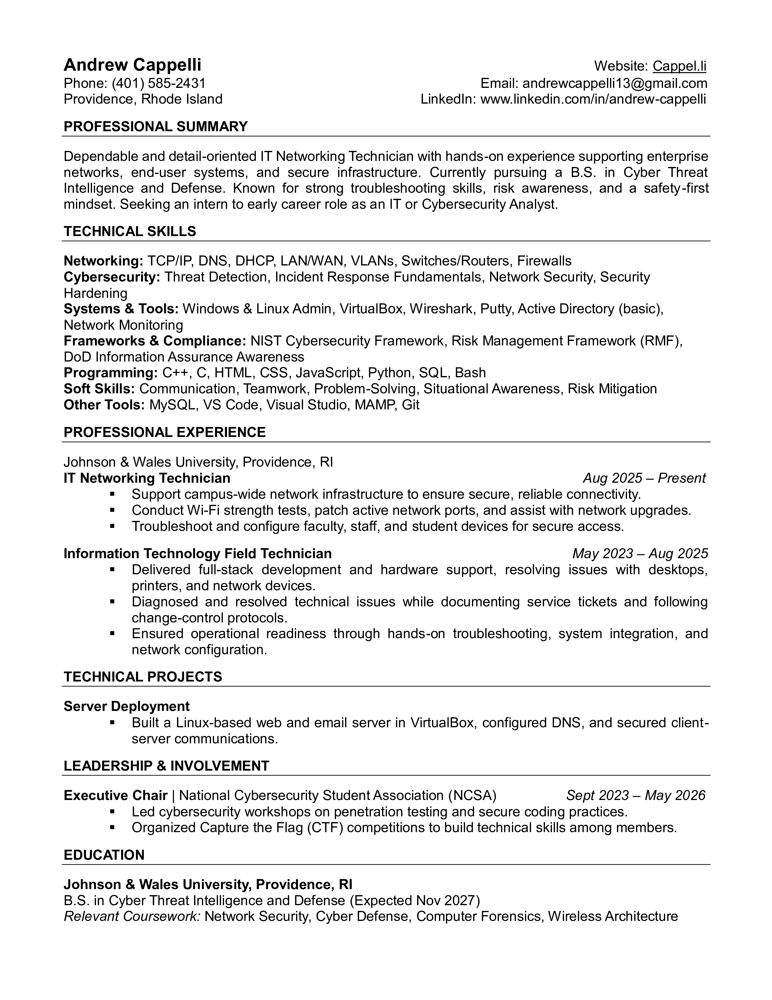

// hello world
Andrew Cappelli
> cybersecurity student & developer
about

currently studying
Under-grad [Cyber Security]
Human Computer Interfaces
Distributed Systems
Howdy — I'm Andrew, a cybersecurity undergrad who likes building things as much as breaking them. This site is a living record of what I'm working on and thinking about. More to come as projects and notes pile up.
Cyber Security
C++
Assembly
JavaScript
HTML / CSS
Java
Linux
Git
resume
